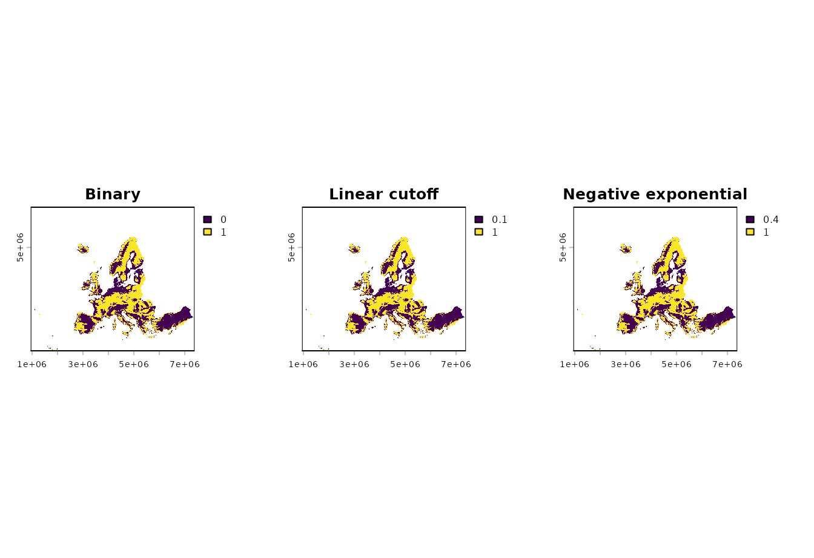
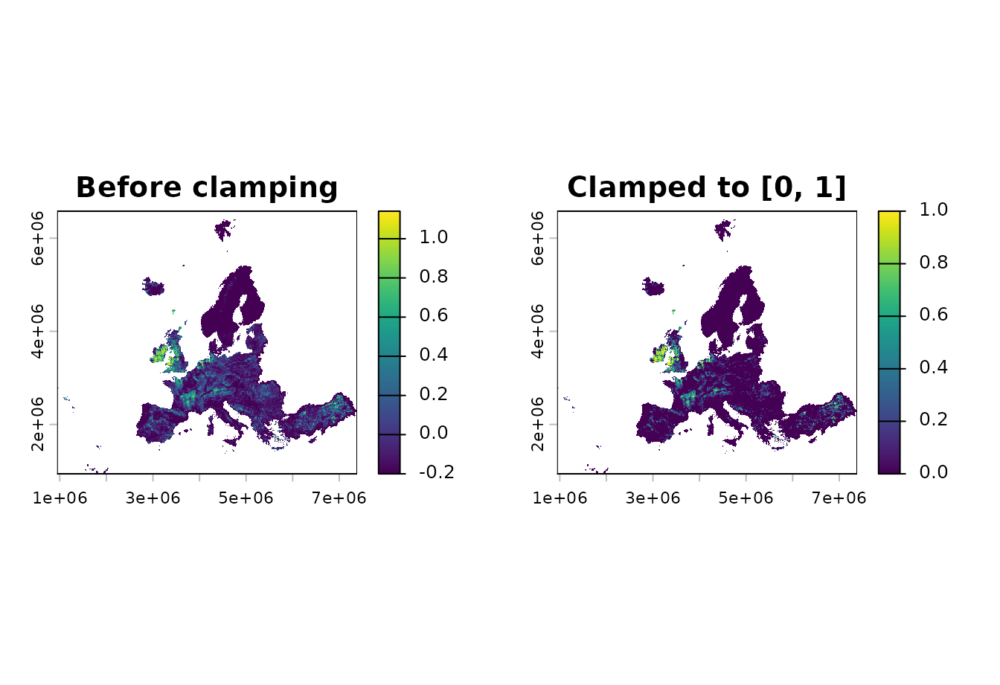
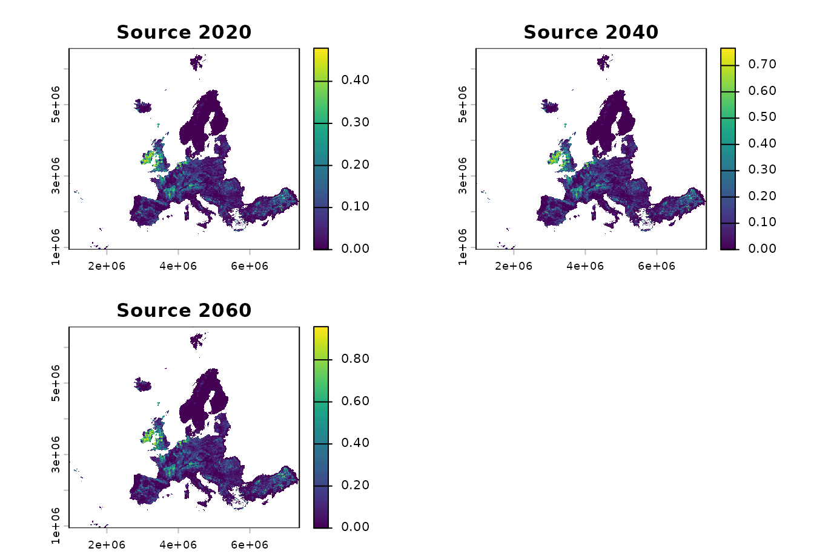
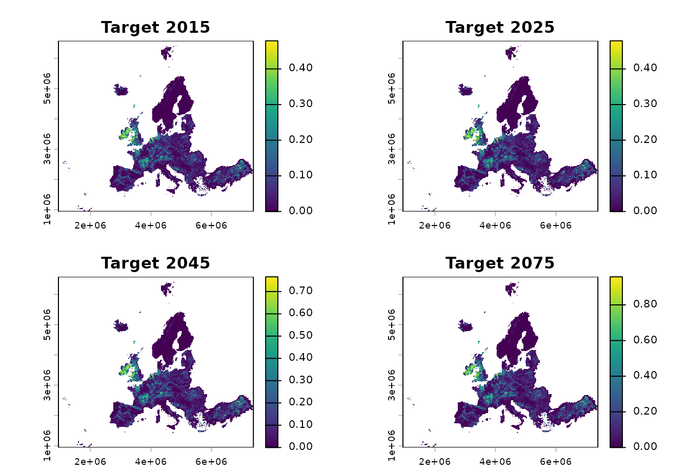
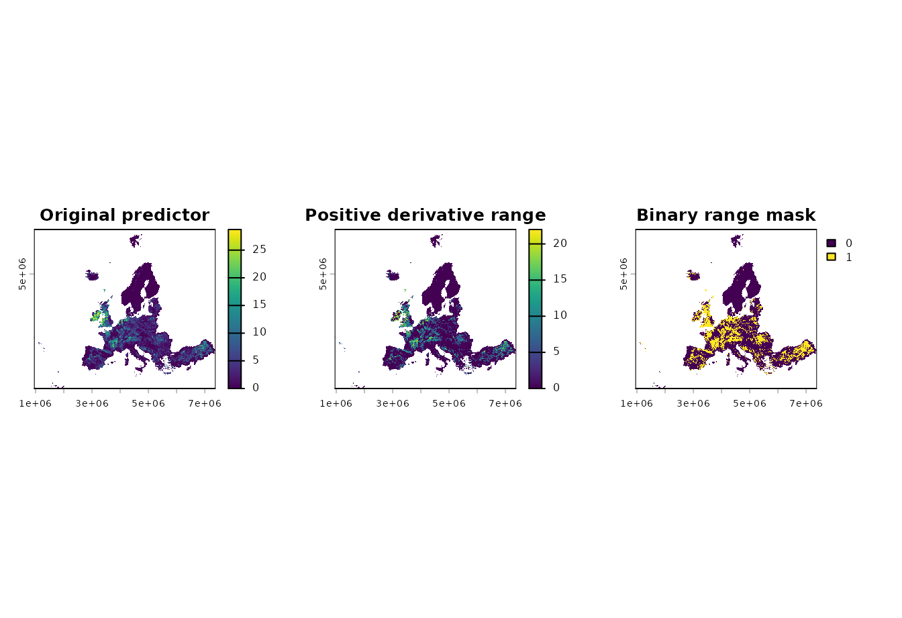

This article demonstrates the general helper functions in
ibis.insights. These helpers are useful for preparing
suitability layers, aligning temporal inputs, and interpreting
derivative predictor terms.
Example data
The examples use the small rasters shipped with the package. The
land-use layer is converted from an integer fraction in
[0, 10000] to a proportion in [0, 1].
range <- terra::rast(system.file(
"extdata/example_range.tif",
package = "ibis.insights",
mustWork = TRUE
))
grassland <- terra::rast(system.file(
"extdata/Grassland.tif",
package = "ibis.insights",
mustWork = TRUE
)) / 10000
names(grassland) <- "grassland"
dem <- terra::rast(system.file(
"extdata/DEM.tif",
package = "ibis.insights",
mustWork = TRUE
))
names(dem) <- "scaled_dem"Create elevation masks with
create_elevation_mask()
Use create_elevation_mask() to convert a DEM into an
elevation suitability mask from a species-specific preferred interval. A
binary mask assigns 1 to cells inside the interval and 0 outside it.
Soft cutoffs keep the interval at 1 and gradually reduce suitability
outside the interval to represent uncertainty around the lower and upper
elevation thresholds.
The bundled DEM is scaled to values of 0 and 1. To make the three cutoff behaviours visible, this example treats values close to 1 as preferred while values near 0 fall outside the preference range.
preferred_elevation <- c(0.85, 1)
elevation_tolerance <- 1
binary_elevation_mask <- create_elevation_mask(
dem,
elevation_range = preferred_elevation
)
linear_elevation_mask <- create_elevation_mask(
dem,
elevation_range = preferred_elevation,
cutoff = "linear",
tolerance = elevation_tolerance
)
exponential_elevation_mask <- create_elevation_mask(
dem,
elevation_range = preferred_elevation,
cutoff = "negative_exponential",
tolerance = elevation_tolerance
)
names(binary_elevation_mask) <- "binary"
names(linear_elevation_mask) <- "linear"
names(exponential_elevation_mask) <- "negative_exponential"
preferred_elevation
#> [1] 0.85 1.00
terra::global(
c(binary_elevation_mask, linear_elevation_mask, exponential_elevation_mask),
"range",
na.rm = TRUE
)
#> min max
#> binary 0.0000000 1
#> linear 0.1500000 1
#> negative_exponential 0.4274149 1
op <- par(mfrow = c(1, 3), mar = c(2, 2, 3, 4))
plot(binary_elevation_mask, main = "Binary")
plot(linear_elevation_mask, main = "Linear cutoff")
plot(exponential_elevation_mask, main = "Negative exponential")
par(op)The same function also works with stars objects.
create_elevation_mask(
stars::st_as_stars(dem),
elevation_range = preferred_elevation
)
#> stars object with 2 dimensions and 1 attribute
#> attribute(s):
#> Min. 1st Qu. Median Mean 3rd Qu. Max. NAs
#> DEM.tif 0 0 0 0.4945312 1 1 299034
#> dimension(s):
#> from to offset delta refsys point x/y
#> x 1 644 943761 10000 +proj=laea +lat_0=52 +lon... FALSE [x]
#> y 1 564 6579903 -10000 +proj=laea +lat_0=52 +lon... FALSE [y]Clamp values with st_clamp()
Use st_clamp() when a suitability or fractional layer
may contain values outside its valid range. This can happen after
rescaling, combining predictors, or applying a model transformation.
Values below the lower bound are set to the lower bound; values above
the upper bound are set to the upper bound.
raw_suitability <- (grassland * 1.4) - 0.2
names(raw_suitability) <- "raw_suitability"
clamped_suitability <- st_clamp(
raw_suitability,
lower = 0,
upper = 1
)
names(clamped_suitability) <- "clamped_suitability"
terra::global(c(raw_suitability, clamped_suitability), "range", na.rm = TRUE)
#> min max
#> raw_suitability -0.2 1.14064
#> clamped_suitability 0.0 1.00000
op <- par(mfrow = c(1, 2), mar = c(2, 2, 3, 4))
plot(raw_suitability, main = "Before clamping")
plot(clamped_suitability, main = "Clamped to [0, 1]")
par(op)The same function also works with stars objects.
clamped_stars <- st_clamp(
stars::st_as_stars(raw_suitability),
lower = 0,
upper = 1
)
clamped_stars
#> stars object with 2 dimensions and 1 attribute
#> attribute(s):
#> Min. 1st Qu. Median Mean 3rd Qu. Max. NAs
#> raw_suitability 0 0 0 0.05840846 0 1 297511
#> dimension(s):
#> from to offset delta refsys x/y
#> x 1 644 943761 10000 PROJCRS["unknown",\n BA... [x]
#> y 1 564 6579903 -10000 PROJCRS["unknown",\n BA... [y]Align temporal layers with align_temporal()
Use align_temporal() when two temporal raster objects
use different time steps. For each target year, the function selects the
most recent source layer whose year is less than or equal to the target
year. If the target is earlier than the first source year, the first
source layer is used.
Here a coarse source time series is aligned to more frequent target years.
source_lu <- c(grassland * 0.5, grassland * 0.8, grassland)
names(source_lu) <- c("grassland_2020", "grassland_2040", "grassland_2060")
terra::time(source_lu) <- as.Date(c(
"2020-01-01",
"2040-01-01",
"2060-01-01"
))
target_template <- c(range, range, range, range)
names(target_template) <- c("target_2015", "target_2025", "target_2045", "target_2075")
terra::time(target_template) <- as.Date(c(
"2015-01-01",
"2025-01-01",
"2045-01-01",
"2075-01-01"
))
aligned_lu <- align_temporal(source_lu, target_template)
data.frame(
target_year = as.integer(terra::time(aligned_lu)),
selected_source_layer = names(aligned_lu)
)
#> target_year selected_source_layer
#> 1 2015 grassland_2020
#> 2 2025 grassland_2020
#> 3 2045 grassland_2040
#> 4 2075 grassland_2060

Recreate derivative predictor ranges with
create_derivate_range()
create_derivate_range() is a specialized helper for
reconstructing the range of an original predictor that is represented by
derivative model terms such as bin, thresh, or
hinge features. A typical use is to inspect which values of
an environmental variable are associated with positive derivative
coefficients.
The helper expects derivative feature names. In this simple example,
a synthetic temperature predictor is created from the grassland fraction
so it has nonzero values across a useful range. Positive
bin_temperature_* coefficients mark values between 4 and 22
as favourable, while a negative coefficient for higher values is
ignored.
temperature <- grassland * 30
names(temperature) <- "temperature"
coefs <- data.frame(
Feature = c(
"(Intercept)",
"bin_temperature_4_12",
"bin_temperature_12_22",
"bin_temperature_22_30"
),
Beta = c(0, 1.2, 0.8, -0.5)
)
temperature_range <- ibis.insights:::create_derivate_range(
env = temperature,
varname = "temperature",
co = coefs,
to_binary = FALSE
)
temperature_mask <- ibis.insights:::create_derivate_range(
env = temperature,
varname = "temperature",
co = coefs,
to_binary = TRUE
)
names(temperature_range) <- "temperature_range"
names(temperature_mask) <- "temperature_mask"
coefs
#> Feature Beta
#> 1 (Intercept) 0.0
#> 2 bin_temperature_4_12 1.2
#> 3 bin_temperature_12_22 0.8
#> 4 bin_temperature_22_30 -0.5
terra::global(c(temperature, temperature_range, temperature_mask), "range", na.rm = TRUE)
#> min max
#> temperature 0 28.728
#> temperature_range 0 21.996
#> temperature_mask 0 1.000
op <- par(mfrow = c(1, 3), mar = c(2, 2, 3, 4))
plot(temperature, main = "Original predictor")
plot(temperature_range, main = "Positive derivative range")
plot(temperature_mask, main = "Binary range mask")
par(op)